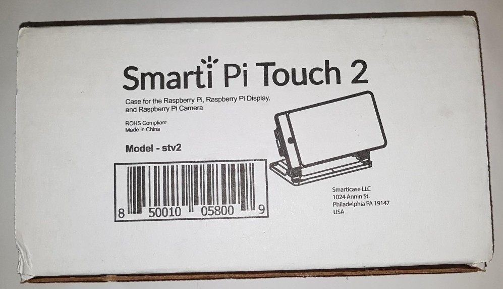

TThe scope of our project needs to remain as constant as possible. With many future state ideas in mind, we need to ensure we don’t overthink and under-deliver on the final product. At this stage, the scope looks like everything is deliverable in full and on time. Our project scope is to add an additional channel of communication in the form of an encoder/decoder for images and video sent by slow scan television (SST). We can achieve this by combining new and existing technologies commonly available. We are limiting our scope to the project idea of:
By limiting this stage and not adding SSL, multi-platform architect and/or GUI recall features, we can avoid ‘scope-creep’. Limitations for our team come in the form of programing. As a team we have the skillset to project manage, assemble hardware and software, understand our concept and the ability to draw up user training courses and Documentation. To overcome our limitations, we plan to hire a programmer to create the interface and meet other programing issues that arise.
Smart pi 2 enclosure
The tools and technology required for our project are as follows:
Both James and Chris have previous experience in Raspberry Pi’s, so imaging the SD cards with Lineage-OS won’t be as difficult as first expected. Most of our team members have experience in the Android OS in some form or another, either in tablet, phone, Raspberry PI or media center. Consequently, downloading and installing the two required apps, Robot36 and SSTV Encoder, won’t pose any issues.
Several testing types will be required before release. Firstly Unit testing to ensure hardware is working as expected. After imaging Lineage-OS 16.0 to the SD card and loading on the Raspberry PI we need to confirm the Raspberry PIs and Android OS are powering up as expected.
Secondly integration and system testing: We need to ensure the SSTV Encoder app can convert an image to a sound file. Once we successfully complete this, we need to ensure Robot36 can decrypt the sound file back into an image. The second part of our testing will involve the sensitivity of the ‘squelch’ feature on the Baofeng UV-5R ham radio. The test objective is to ensure none of the receiving sound bite is suppressed by the squelch circuitry on the radio.
Thirdly we need to conduct acceptance testing: We will not have real end user testing on our project because we are not rolling out a multi-user interface product. However, we need to ensure the product is easy-to-use, so it will be important for us to test on key demographic users to ensure usability. There will be very comprehensive training developed for operators of this device, so feedback on usability will help tailor training manuals and courses for greater product uptake.